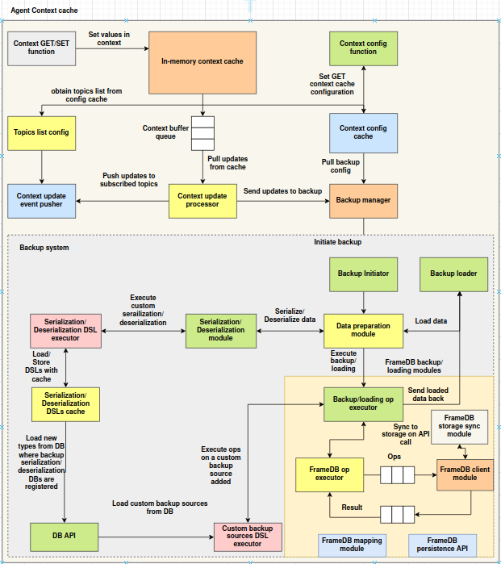

Agent context cache
Introduction
The Agent Context Cache is an event-driven, in-memory key-value store for agents. It is provided by the agent_context_cache package in libs/agents-addons. It offers:
- Fast in-memory storage for low-latency access
- Lightweight namespace isolation to scope key-value pairs
- A buffered update system that records every write as an operation and processes it on a background thread
- NATS-based broadcasting of context updates to a configurable list of topics
- A small configuration store (topics list, backup flag and backup settings) kept in the cache itself
It is useful for per-agent working state that other agents or services should be notified about.
Architecture overview


The diagram shows the full design, including a backup subsystem. The components implemented in agent_context_cache.core are described below. Backup is not implemented yet: the backup flag and settings can be stored and read, but no backup manager is wired in.
1. Context Interface and Primary Storage
All reads and writes go through AgentContextCache.get / set (and friends) to an InMemoryContextCache. It is a plain Python dict of namespaces, each holding key-value pairs. Reads are served from it directly. Data lives only in the process's memory and is lost on restart.
2. Configuration and Topic Management
ContextConfigurations stores the cache's runtime configuration as ordinary keys in the config namespace of the same in-memory cache:
| Key | Meaning |
|---|---|
topics_list |
NATS subjects that receive context updates |
backup_enabled |
Backup flag (stored only) |
backup_settings |
Backup settings dict (stored only) |
TopicsListConfig is a thin wrapper that reads and updates the topics list.
3. Buffered Processing and Broadcasting
-
Every
set,delete(of an existing key) andclear_namespace(of an existing namespace) records an operation in theContextBufferQueue, a thread-safe queue. This includes writes to theconfignamespace.json { "operation": "set", "namespace": "default", "key": "user_profile", "value": { "name": "Alice" } } -
The
ContextUpdateProcessorruns on a daemon thread started byAgentContextCache. It takes operations from the queue one at a time and hands each to theContextUpdateEventPusher. -
The pusher connects to NATS at
nats://localhost:4222, publishes the event to every topic intopics_list, and disconnects:json { "event_type": "context_update", "sender_subject_id": "<SUBJECT_ID env>", "event_data": { "operation": "set", "namespace": "default", "key": "user_profile", "value": { "name": "Alice" } } }
If no topics are configured, a warning is logged and nothing is published. Errors while publishing are logged, and processing continues with the next operation. Values must be JSON-serializable to be broadcast.
Importing the context cache
The components live in agent_context_cache.core:
from agent_context_cache.core.agent_context import AgentContextCache
| Component | Module | Description |
|---|---|---|
AgentContextCache |
agent_context_cache.core.agent_context |
Main class: wires the cache, configuration, queue, processor and pusher |
InMemoryContextCache |
agent_context_cache.core.cache |
In-memory namespaced store that records operations |
ContextStoreWrapper |
agent_context_cache.core.cache |
GET / SET / DELETE / CREATE_NS wrapper around a cache |
ContextConfigurations |
agent_context_cache.core.config |
Configuration store in the config namespace |
ContextBufferQueue |
agent_context_cache.core.context_mgmt |
Thread-safe queue of operations |
ContextUpdateProcessor |
agent_context_cache.core.context_mgmt |
Background processor that drains the queue |
TopicsListConfig |
agent_context_cache.core.topics_pusher |
Wrapper for managing the topics list |
ContextUpdateEventPusher |
agent_context_cache.core.topics_pusher |
Publishes updates to NATS |
Dependencies: nats-py (installed separately; it is not listed in agent_addons' setup.py).
Known issue:
topics_pusher.pycontainsfrom .config import TopicsListConfig, butconfig.pydoes not defineTopicsListConfig. Importingtopics_pusher— and thereforeagent_context, which imports it — currently fails withImportErroruntil that line is removed.
Usage
Initialize
from agent_context_cache.core.agent_context import AgentContextCache
ctx = AgentContextCache()
The constructor takes no arguments. It creates the in-memory cache and starts the update processor thread.
Store and retrieve context values
# Set a value in the default namespace
ctx.set("user_profile", {"name": "Alice", "age": 30})
# Retrieve it
profile = ctx.get("user_profile")
print(profile) # {'name': 'Alice', 'age': 30}
ctx.get("missing") # None
ctx.delete("user_profile")
Use namespaces for scoped isolation
ctx.set("session_token", "abc123", namespace="auth")
ctx.get("session_token", namespace="auth") # 'abc123'
ctx.get("session_token") # None (default namespace)
Manage keys and namespaces
ctx.list_keys() # keys in the 'default' namespace
ctx.list_keys(namespace="auth") # keys in 'auth'
ctx.list_namespaces() # all namespaces, including 'config'
ctx.clear_namespace("auth") # removes all keys in 'auth'
Namespaces are created automatically on first access (including get and list_keys).
Configure topics and backup
ctx.set_topics_list(["agent.context.updates"]) # must be a list (else ValueError)
print(ctx.get_topics_list()) # ['agent.context.updates']
ctx.enable_backup()
ctx.set_backup_settings({"interval": 60}) # must be a dict (else ValueError)
print(ctx.is_backup_enabled()) # True
print(ctx.get_backup_settings()) # {'interval': 60}
ctx.disable_backup()
To add or remove single topics, use the configuration object directly:
ctx.context_configurations.add_topic("agent.context.audit")
ctx.context_configurations.remove_topic("agent.context.audit")
Shutdown
ctx.shutdown()
Known issue:
shutdown()callsupdate_processor.stop_processing(), which does not exist. The method that stops the processor isstop(), and it only stops a thread started withContextUpdateProcessor.start(). The processor thread is a daemon thread, so it ends when the process exits.
Topics and Broadcasting
How broadcasting works
- A write (
set/delete/clear_namespace) is applied to the in-memory cache. - The operation is queued.
- The processor thread publishes a
context_updateevent to every configured topic.
Each publish opens and closes its own NATS connection (nats://localhost:4222). The NATS URL is a ContextUpdateEventPusher constructor argument, but AgentContextCache always uses the default.
Listening for updates
import asyncio
import json
import nats
async def main():
nc = await nats.connect("nats://localhost:4222")
async def handler(msg):
event = json.loads(msg.data.decode())
op = event["event_data"]
print(f"[{event['sender_subject_id']}] {op['operation']} {op['namespace']}/{op['key']} = {op.get('value')}")
await nc.subscribe("agent.context.updates", cb=handler)
await asyncio.Event().wait()
asyncio.run(main())
Using the Building Blocks Directly
The components can also be composed by hand, for example to use a different NATS URL:
from agent_context_cache.core.cache import InMemoryContextCache
from agent_context_cache.core.config import ContextConfigurations
from agent_context_cache.core.context_mgmt import ContextBufferQueue, ContextUpdateProcessor
from agent_context_cache.core.topics_pusher import TopicsListConfig, ContextUpdateEventPusher
queue = ContextBufferQueue()
cache = InMemoryContextCache(buffer_queue=queue)
config = ContextConfigurations(context_cache=cache)
pusher = ContextUpdateEventPusher(TopicsListConfig(config), nats_url="nats://nats.messaging:4222")
processor = ContextUpdateProcessor(buffer_queue=queue, event_pusher=pusher)
processor.start() # background thread
# ...
processor.stop()
InMemoryContextCache(buffer_queue=None) works as a plain namespaced dict with no broadcasting.
AgentContextCache Reference
| Method | Description |
|---|---|
set(key, value, namespace="default") |
Store a value (queued for broadcast) |
get(key, namespace="default") |
Get a value, or None |
delete(key, namespace="default") |
Delete a key (queued for broadcast if it existed) |
list_keys(namespace="default") |
List keys in a namespace |
clear_namespace(namespace="default") |
Clear a namespace (queued if it existed) |
list_namespaces() |
List namespaces |
set_topics_list(topics) / get_topics_list() |
Set / get broadcast topics |
enable_backup() / disable_backup() / is_backup_enabled() |
Backup flag (stored only) |
set_backup_settings(settings) / get_backup_settings() |
Backup settings (stored only) |
shutdown() |
See the known issue above |
Attributes: cache, context_configurations, topics_list_config, buffer_queue, event_pusher, update_processor.